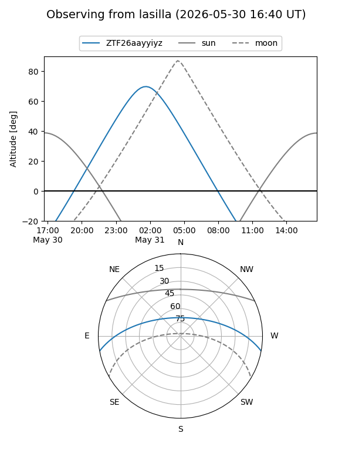
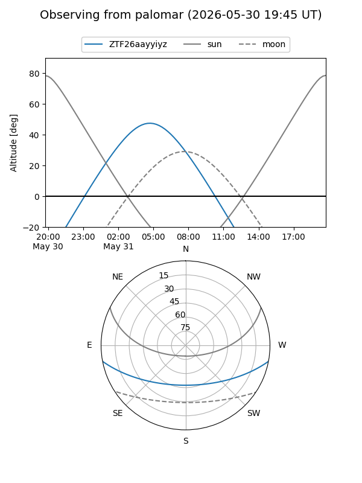

ZTF26aayyiyz
Target ZTF26aayyiyz at 2026-05-31 07:43
Aliases and brokers:
lsst-FINK: link
lsst-Lasair: link
lsst-ALeRCE: link
ztf-FINK: link
ztf-Lasair: link
ztf-ALeRCE: link
alt names
ZTF26aayyiyz (ztf,fink_ztf)
Coordinates:
equatorial (ra, dec) = 201.9476,-8.96922
equatorial (HMS+DMS) = 13:27:47.42,-08:58:09.19
galactic (l, b) = (317.9019,+52.84268)
Flags:
Photometry:
last ztfg=18.81
1 ztfg detections
Lightcurve
Visibility


Additional plots